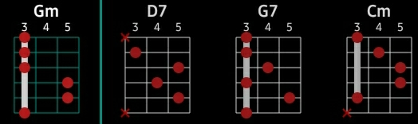

|
Para quem ainda não sabe que podemos penetrar no universo da música com as sete primeiras letras maiúscalas do alfabeto, vale a pena tirar um tempo para ir tomando uma profunda intimidade com elas. A B C D E F G, ou seja: LÁ SI DÓ RÉ MI FÁ SOL Musicalmente, elas são denominadas CIFRAS. Existem inúmeras maneiras de decorá-las, ou dominá-las, por fim. Quando dei conta da importãncia das CIFRAS para a prática do violão, inventei uma forma de tê-las para sempre comigo. Para tanto, criei, adaptei para o contexto da teoria musical, a sua escrita cifrada, as seguintes palavras: A(LA) BES(SI) CE(DO) DE(RÉ) E(MÍ)LIA ÉFÊ(FA)CA GÊ(SOL) Embora lá, cifrar. Amor Amém Axé !!! SARAU DO CIRCO (Jorge L A Matheus)
D7 G D7 G D7 |